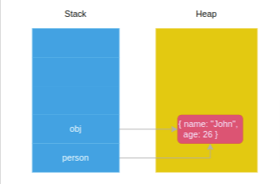

JavaScript Fundamentals
Introduction to JavaScript
JavaScript was created in 1995 by Brendan Eich while he was working at Netscape. It was originally called Mocha, then renamed to LiveScript, and finally to JavaScript. Today, JavaScript is one of the most popular programming languages in the world, primarily used for web development.
JavaScript consists of three main components:
- ECMAScript: The core language specification
- DOM (Document Object Model): Allows JavaScript to interact with HTML and CSS
- BOM (Browser Object Model): Allows JavaScript to interact with the browser
Variables and Data Types
Variable Basics
In JavaScript, variables are containers for storing data values. Here's how to create and use them:
// Declaring variables
let name = "John"; // Using let (recommended)
var age = 30; // Using var (older style)
const PI = 3.14; // Using const (for values that won't change)
Important rules for variables:
- Cannot start with digits or special characters (except $ and _)
-
Use camelCase by convention (e.g.,
firstName,totalAmount) - JavaScript is dynamically typed (you don't need to specify the type)
- In contrast, languages like Java and C# are statically typed
Data Types
JavaScript has two main categories of data types:
1. Primitive Types
These are simple, immutable data types:
-
undefined: A variable that has been declared but not assigned a value
let undeclaredVar; console.log(typeof undeclaredVar); // undefined -
null: Represents the intentional absence of any object value
let emptyValue = null; console.log(null == undefined); // true (loose equality) console.log(null === undefined); // false (strict equality) -
NaN: Stands for "Not a Number" - a special numeric value indicating an invalid number
console.log('a' / 2); // NaN console.log(NaN == NaN); // false (NaN doesn't equal anything, even itself) -
string: Text data (immutable in JavaScript)
let greeting = "Hello"; // Strings in JavaScript are immutable - operations create new strings let newGreeting = greeting + " World"; // Creates a new string -
boolean: true or false values
let isActive = true; let isComplete = false; -
symbol: A unique and immutable primitive value
let s1 = Symbol(); // Creates a new unique value console.log(Symbol() == Symbol()); // false -
bigint: For representing large integers
let bigNumber = 123456789012345678901234567890n; // The 'n' suffix makes it a BigInt
2. Complex Types
These are more complex data structures:
-
Object: A collection of properties
(key-value pairs)
let person = { name: "John", age: 25, isEmployed: true }; // Accessing properties console.log(person.name); // Using dot notation console.log(person["age"]); // Using array notation // Adding/modifying properties person.location = "New York"; // Deleting properties delete person.age; // Checking if a property exists console.log("name" in person); // true
Helpful Features
Numeric Separator
For better readability of large numbers: It's important to note that all numbers in JavaScript are floating-point numbers.
let amount = 120_201_123.05; // Same as 120201123.05
let billion = 1_000_000_000;
let binary = 0b1010_1010; // Binary
let hex = 0x1A_2B_3C; // Hexadecimal
Boolean Conversion
The Boolean() function converts values to boolean:
// These convert to true
Boolean("Hello"); // Non-empty string
Boolean(42); // Non-zero number
Boolean({}); // Any object
// These convert to false
Boolean(""); // Empty string
Boolean(0); // Zero
Boolean(NaN); // Not a Number
Boolean(null); // Null
Boolean(undefined); // Undefined
String Features
Template Literals
let name = "Sarah";
let greeting = `Hello, I'm ${name}!`; // String interpolation
String Access
let word = "Hello";
console.log(word[0]); // "H" (first character)
console.log(word[word.length - 1]); // "o" (last character)
String Conversion
let num = 42;
let str1 = String(num); // "42"
let str2 = num + ""; // "42"
let str3 = num.toString(); // "42" (doesn't work for undefined and null)
Value Types vs Reference Types
Understanding how JavaScript stores and passes values is crucial:
Primitive vs Reference Values
- Primitive values (like numbers, strings) are stored directly in memory (on the stack)
- Reference values (objects, arrays, functions) store a reference pointing to the actual data (on the heap)
When you assign or pass primitive values, JavaScript creates copies:
let a = 5;
let b = a; // 'b' gets a copy of the value
a = 10; // Changing 'a' doesn't affect 'b'
console.log(b); // Still 5
When you assign or pass objects, JavaScript copies the reference, not the actual data:
let obj1 = {name: "John"};
let obj2 = obj1; // Both variables reference the same object
obj1.name = "Mike"; // Changes affect both variables
console.log(obj2.name); // "Mike"
This diagram helps visualize it:
| Stack (Fixed size) | Heap (Dynamic size) |
|---|---|
| Primitive values | Object data |
| References to objects → | ← Referenced by stack variables |

Arrays
Arrays are special objects used to store ordered collections:
// Creating arrays
let colors = ["red", "green", "blue"];
let numbers = new Array(1, 2, 3); // Using constructor
let emptyWithSize = new Array(5); // Creates array with 5 empty slots
// Common array operations
colors.push("yellow"); // Add to end: ["red", "green", "blue", "yellow"]
colors.unshift("purple"); // Add to beginning: ["purple", "red", "green", "blue", "yellow"]
colors.pop(); // Remove from end: ["purple", "red", "green", "blue"]
colors.shift(); // Remove from beginning: ["red", "green", "blue"]
let position = colors.indexOf("green"); // Find index: 1
let isArray = Array.isArray(colors); // Check if array: true
Operators
Arithmetic Operators
JavaScript handles type conversion automatically in arithmetic operations:
console.log(5 + 2); // 7
console.log("5" + 2); // "52" (string concatenation)
console.log("5" - 2); // 3 (string converted to number)
console.log("5" * 2); // 10 (string converted to number)
Value Conversion
Using the unary plus/minus to convert values:
let str = "10";
console.log(+str); // 10 (number)
console.log(-str); // -10 (number)
console.log(+true); // 1
console.log(+false); // 0
Increment/Decrement Operators
There are important differences between prefix and postfix:
// Prefix (++x) - increments first, then uses the value
let a = 5;
let b = ++a; // a = 6, b = 6
// Postfix (x++) - uses the original value, then increments
let c = 5;
let d = c++; // c = 6, d = 5
Control Flow Statements
JavaScript provides various ways to control program flow:
// if statement
if (condition) {
// code to execute if condition is true
} else if (anotherCondition) {
// code to execute if anotherCondition is true
} else {
// code to execute if no conditions are true
}
// Ternary operator
let result = condition ? valueIfTrue : valueIfFalse;
// Switch statement
switch (expression) {
case value1:
// code when expression equals value1
break;
case value2:
// code when expression equals value2
break;
default:
// code when no cases match
}
// Loops
for (let i = 0; i < 5; i++) {
// repeats 5 times
}
while (condition) {
// executes as long as condition is true
}
do {
// executes at least once, then as long as condition is true
} while (condition);
// break exits the loop, continue skips to next iteration
JavaScript Functions
Basic Function Behavior
Return Values
- Every function in JavaScript implicitly returns undefined unless you explicitly return another value
The Arguments Object
- Inside a function, you can access an object called arguments that contains all arguments passed to the function
- The arguments object behaves like an array though it is not an instance of the Array type
-
arguments.lengthshows the number of actual arguments passed to the function
function add(x, y = 1, z = 2) {
console.log(arguments.length);
return x + y + z;
}
add(10); // outputs: 1
add(10, 20); // outputs: 2
add(10, 20, 30); // outputs: 3
Hoisting
Variable Hoisting
-
Var hoisting: Variables declared with
varare hoisted to the top of their scope and initialized with undefined -
Let hoisting: Variables declared with
letare also hoisted but not initialized (creating a "temporal dead zone")
// With var
console.log(counter); // outputs: undefined
var counter = 1;
// With let
console.log(counter); // ReferenceError: Cannot access 'counter' before initialization
let counter = 1;
Function Hoisting
- Function declarations are hoisted completely (both declaration and definition)
- Function expressions, arrow functions, and class expressions are NOT hoisted
// This works - function declaration is hoisted
sayHello();
function sayHello() {
console.log("Hello!");
}
// This fails - function expression is not hoisted
sayGoodbye(); // TypeError: sayGoodbye is not a function
var sayGoodbye = function() {
console.log("Goodbye!");
};
Parameters and Arguments
Parameter Default Values
- In JavaScript, parameters have a default value of undefined if no argument is provided
- You can set explicit default values for parameters:
function greet(name = "Guest") {
return `Hello, ${name}!`;
}
greet(); // "Hello, Guest!"
greet("John"); // "Hello, John!"
Passing Arguments
Primitives (Pass by Value)
- Primitive values (strings, numbers, booleans) are passed by value
- Changes to parameters inside the function do not affect the original variables
function increment(x) {
x += 1;
console.log("Inside function:", x);
}
let num = 5;
increment(num); // Inside function: 6
console.log(num); // Still 5
Objects (Pass by Reference-like Behavior)
- Objects are passed by reference-like behavior
- Modifying object properties inside a function affects the original object
- However, reassigning the parameter to a new object does not affect the original reference
let person = {
name: "John",
age: 25
};
function increaseAge(obj) {
obj.age += 1; // Modifies the original object
obj = { name: "Jane", age: 22 }; // Local reassignment, doesn't affect original
}
increaseAge(person);
console.log(person); // { name: "John", age: 26 }


Another example:
const styles = { color: "red" };
function change(styles) {
styles = { background: "black" }; // Local reassignment, no effect on original
}
change(styles);
console.log(styles); // { color: 'red' }
Named Parameters
- JavaScript doesn't support true named parameters like some languages
-
To skip parameters, you must use
undefined:
function createDiv(height, width, border) {
// Function implementation
}
// To only set border, you must use:
createDiv(undefined, undefined, 'solid 5px blue');
Better Alternative: Object Parameters
- The most effective way to handle optional parameters is by using an object parameter:
function createDiv(options = {}) {
const {
height = '100px',
width = '100px',
border = 'none'
} = options;
// Function implementation using height, width, border
}
// Call with only needed parameters
createDiv({ border: 'solid 5px blue' });
First-Class Functions
- In JavaScript, functions are first-class citizens
-
They can be:
- Stored in variables
- Passed as arguments to other functions
- Returned from other functions
- Stored in data structures like arrays and objects
// Function stored in variable
const add = function(a, b) { return a + b; };
// Function passed as argument
[1, 2, 3].map(function(x) { return x * 2; });
// Function returned from another function
function createMultiplier(factor) {
return function(x) {
return x * factor;
};
}
const double = createMultiplier(2);
console.log(double(5)); // 10
JavaScript Objects & Prototypes
Constructor Functions
Constructor functions are a way to create multiple objects with the same structure and behavior.
function Person(firstName, lastName) {
this.firstName = firstName;
this.lastName = lastName;
this.getFullName = function() {
return this.firstName + " " + this.lastName;
};
}
// Create a new Person object
let person = new Person("John", "Doe");
console.log(person.getFullName()); // "John Doe"
Key Points About Constructor Functions:
-
Naming Convention: Constructor functions start with a capital letter (e.g.,
Person) to distinguish them from regular functions. -
The
newKeyword: When calling a constructor withnew:- A new empty object is created
thisis bound to that new object- The function code executes
- The new object is returned automatically
-
Memory Inefficiency Problem: The original approach creates a new copy of methods like
getFullName()for each instance, which wastes memory.
Handling Constructor Calls Without new
If a constructor function is called without the
new keyword, it executes as a regular function, and
this refers to the global object (or
undefined in strict mode):
// Safeguard a constructor function
function Person(firstName, lastName) {
// Check if called without new
if (!new.target) {
return new Person(firstName, lastName);
}
this.firstName = firstName;
this.lastName = lastName;
}
// This still works correctly
let person = Person("John", "Doe");
console.log(person.firstName); // "John"
Prototypes
Every JavaScript object has a special property called
prototype, which enables objects to inherit
features from one another.
How Prototypes Work:
-
Every JavaScript function has a property called
prototype(which is itself an object) -
When you use a function as a constructor with
new, the created object gets linked to the constructor'sprototype -
When you try to access a property on an object:
- First, JavaScript looks for the property on the object itself
- If not found, it looks in the object's prototype
- If still not found, it looks in the prototype's prototype, and so on (forming the "prototype chain")
-
The chain ends when a prototype is
null
Using Prototypes for Method Sharing
Instead of defining methods inside the constructor (which creates copies), we can add them to the prototype:
function Person(firstName, lastName) {
this.firstName = firstName;
this.lastName = lastName;
// Notice: no methods defined here
}
// Add method to the prototype (shared by all instances)
Person.prototype.getFullName = function() {
return this.firstName + " " + this.lastName;
};
let person1 = new Person("John", "Doe");
let person2 = new Person("Jane", "Smith");
console.log(person1.getFullName()); // "John Doe"
console.log(person2.getFullName()); // "Jane Smith"
// Both instances share the same method
console.log(person1.getFullName === person2.getFullName); // true
Prototype Chain Relationships
Every constructor function's prototype is linked to
Object.prototype:
// The constructor property points back to the function
console.log(Person.prototype.constructor === Person); // true
// Person's prototype is linked to Object.prototype
console.log(Object.getPrototypeOf(Person.prototype) === Object.prototype); // true
// Ways to access an object's prototype
let p = new Person("John", "Doe");
console.log(Person.prototype === Object.getPrototypeOf(p)); // true
console.log(Person.prototype === p.constructor.prototype); // true
Prototypal Inheritance
In JavaScript, objects can inherit from other objects - this is called prototypal inheritance.
Using __proto__ (Legacy Method)
let person = {
name: "John Doe",
greet: function() {
return "Hi, I'm " + this.name;
}
};
let teacher = {
teach: function(subject) {
return "I can teach " + subject;
}
};
// Make teacher inherit from person
teacher.__proto__ = person;
console.log(teacher.greet()); // "Hi, I'm John Doe"
console.log(teacher.teach("JavaScript")); // "I can teach JavaScript"
Modern Ways to Create Inheritance
ES5 Method:
let person = {
name: "John Doe",
greet: function() {
return "Hi, I'm " + this.name;
}
};
// Create a new object with person as its prototype
let teacher = Object.create(person);
teacher.teach = function(subject) {
return "I can teach " + subject;
};
console.log(Object.getPrototypeOf(teacher) === person); // true
ES6 Method:
class Person {
constructor(name) {
this.name = name;
}
greet() {
return "Hi, I'm " + this.name;
}
}
class Teacher extends Person {
constructor(name) {
super(name);
}
teach(subject) {
return "I can teach " + subject;
}
}
Object Properties
JavaScript objects have two types of properties:
- Data Properties: Store values
- Accessor Properties: Functions that get or set values (getters and setters)
Property Attributes
Every property has attributes that control its behavior:
Data Properties:
- Configurable: If false, the property cannot be deleted or have its attributes changed
- Enumerable: If true, the property appears in for...in loops
- Writable: If false, the property's value cannot be changed
- Value: The actual value of the property
Accessor Properties:
- Configurable: Same as above
- Enumerable: Same as above
- Get: The getter function
- Set: The setter function
Defining Properties
You can define or modify property attributes using
Object.defineProperty() or
Object.defineProperties():
let product = {};
Object.defineProperties(product, {
name: {
value: 'Smartphone',
enumerable: true // Will show up in for...in loops
},
price: {
value: 799,
writable: true // Can be changed
},
tax: {
value: 0.1,
configurable: false // Cannot be deleted
},
netPrice: {
// Accessor property with getter
get: function() {
return this.price * (1 + this.tax);
}
}
});
console.log(product.name); // "Smartphone"
console.log(product.netPrice); // 878.9
Property Enumeration and Ownership
-
for...inloops iterate over all enumerable properties (including inherited ones) -
obj.propertyIsEnumerable()checks if a property is enumerable -
obj.hasOwnProperty()checks if a property belongs to the object itself (not inherited)
Computed Properties (ES6)
Allow you to use expressions as property names:
let propName = 'dynamicProperty';
let obj = {
[propName]: 'value' // Creates property named "dynamicProperty"
};
// Useful for creating objects dynamically
function createObj(key, value) {
return { [key]: value };
}
let user = createObj('username', 'john_doe');
console.log(user); // { username: 'john_doe' }
Classes (ES6)
ES6 introduced a cleaner syntax for creating objects and implementing inheritance:
class Person {
// Class properties
#firstName; // Private property (with # prefix)
#lastName; // Private property
static count = 0; // Static property (shared by all instances)
// Constructor
constructor(firstName, lastName) {
this.#firstName = firstName;
this.#lastName = lastName;
Person.count++; // Increment the counter
}
// Instance method
getFullName() {
return `${this.#firstName} ${this.#lastName}`;
}
// Private method
#validateName(name) {
return typeof name === 'string' && name.trim().length >= 2;
}
// Static method
static createAnonymous() {
return new Person("Anonymous", "User");
}
}
// Create an instance
let person = new Person("John", "Doe");
console.log(person.getFullName()); // "John Doe"
console.log(Person.count); // 1
Inheritance with Classes
class Employee extends Person {
#position;
constructor(firstName, lastName, position) {
super(firstName, lastName); // Call parent constructor
this.#position = position;
}
getRole() {
return this.#position;
}
// Override parent method
getFullName() {
return `${super.getFullName()} (${this.#position})`;
}
}
let employee = new Employee("Jane", "Smith", "Developer");
console.log(employee.getFullName()); // "Jane Smith (Developer)"
JavaScript Advanced Functions
Functions as Objects
In JavaScript, all functions are actually objects - they are
instances of the Function type. This means
functions can:
- Have properties and methods
- Be passed as arguments to other functions
- Be assigned to variables
- Be returned from other functions
Closures
A closure is a function that retains access to its lexical scope (variables from its parent function) even after the parent function has finished executing.
How Closures Work
- When you define a function inside another function, the inner function has access to the variables of the outer function
- If the inner function is returned or otherwise preserved (like stored in a variable or passed as a callback), it maintains access to those variables
- This preserved environment is called a closure
Practical Example of Closure Issues
Consider this classic problem with loops and
setTimeout:
for (var index = 1; index <= 3; index++) {
setTimeout(function () {
console.log('after ' + index + ' second(s): ' + index);
}, index * 1000);
}
// Output:
// after 4 second(s): 4
// after 4 second(s): 4
// after 4 second(s): 4
What happened? By the time the first callback executes (after
1000ms), the loop has already completed, and
index is 4. All three functions in the
closure share the same index variable.
Solutions to the Loop Closure Problem
Solution 1: IIFE (Immediately Invoked Function Expression)
Create a new scope for each iteration using an IIFE:
for (var index = 1; index <= 3; index++) {
(function(currentIndex) {
setTimeout(function () {
console.log('after ' + currentIndex + ' second(s): ' + currentIndex);
}, currentIndex * 1000);
})(index);
}
// Output:
// after 1 second(s): 1
// after 2 second(s): 2
// after 3 second(s): 3
Solution 2: Block Scoping with let (ES6+)
The let keyword creates a new binding for each loop
iteration:
for (let index = 1; index <= 3; index++) {
setTimeout(function () {
console.log('after ' + index + ' second(s): ' + index);
}, index * 1000);
}
// Output:
// after 1 second(s): 1
// after 2 second(s): 2
// after 3 second(s): 3
The this Keyword in Functions
The value of this inside a function depends on how
the function is called, not where it's defined.
Common this Binding Issues
function Car() {
this.speed = 0;
this.speedUp = function(speed) {
this.speed = speed;
setTimeout(function() {
console.log(this.speed); // undefined
}, 1000);
};
}
let car = new Car();
car.speedUp(50);
Inside the setTimeout callback,
this doesn't refer to the Car instance.
Instead, it refers to the global object (or
undefined in strict mode).
Solutions to the this Problem
Solution 1: Preserve this with a variable
function Car() {
this.speed = 0;
this.speedUp = function(speed) {
this.speed = speed;
let self = this; // Store reference to 'this'
setTimeout(function() {
console.log(self.speed); // 50
}, 1000);
};
}
Solution 2: Use an arrow function (ES6+)
function Car() {
this.speed = 0;
this.speedUp = function(speed) {
this.speed = speed;
setTimeout(() => {
console.log(this.speed); // 50
}, 1000);
};
}
Arrow functions inherit this from their surrounding
scope, which solves the problem elegantly.
Arrow Functions
Arrow functions were introduced in ES6 and provide more concise
syntax, plus they handle this differently.
Syntax
// Traditional function
function add(a, b) {
return a + b;
}
// Arrow function
const add = (a, b) => a + b;
Special Characteristics of Arrow Functions
-
No
thisbinding-
Arrow functions don't have their own
this- they inherit it from the parent scope -
This makes them ideal for callbacks inside methods
where you want to access the parent's
this
-
Arrow functions don't have their own
-
No
argumentsobject-
Arrow functions don't have their own
argumentsobject -
They can access the
argumentsof their containing function
function show() { return (x) => x + arguments[0]; } let display = show(10, 20); let result = display(5); console.log(result); // 15 (5 + 10) // Here, arguments[0] refers to the first argument (10) of the show() function -
Arrow functions don't have their own
-
No
new.target- Arrow functions cannot be used as constructors
-
They don't have access to the
new.targetkeyword
-
No
prototypeproperty-
Unlike regular functions, arrow functions don't
have a
prototypeproperty
-
Unlike regular functions, arrow functions don't
have a
When NOT to Use Arrow Functions
Arrow functions are not suitable for:
-
Event handlers where
thisshould refer to the event target -
Object methods where
thisshould refer to the object -
Prototype methods where
thisshould refer to the instance -
Functions that need to use the
argumentsobject -
Functions that need to be used as constructors with
new
Callbacks and Higher-Order Functions
Callbacks
A callback is a function passed as an argument to another function, to be executed later.
function fetchData(callback) {
// Simulate API call
setTimeout(() => {
const data = { name: "John", age: 30 };
callback(data);
}, 1000);
}
fetchData(function(data) {
console.log(data); // { name: "John", age: 30 }
});
Higher-Order Functions
A higher-order function is a function that accepts another function as an argument or returns a function.
// Higher-order function that accepts a function as argument
function calculate(operation, a, b) {
return operation(a, b);
}
// Functions to pass as arguments
const add = (x, y) => x + y;
const multiply = (x, y) => x * y;
console.log(calculate(add, 5, 3)); // 8
console.log(calculate(multiply, 5, 3)); // 15
// Higher-order function that returns a function
function createMultiplier(factor) {
return function(number) {
return number * factor;
};
}
const double = createMultiplier(2);
const triple = createMultiplier(3);
console.log(double(5)); // 10
console.log(triple(5)); // 15
Higher-order functions are a core concept in functional programming and are widely used in JavaScript for operations like array mapping, filtering, and reducing.
Function Binding
Sometimes you need to explicitly set the value of
this in a function, regardless of how it's
called. JavaScript provides three methods for this:
1. bind()
Creates a new function with this permanently bound
to a specific value:
const person = {
name: "John",
greet: function() {
console.log(`Hello, my name is ${this.name}`);
}
};
const greetFunction = person.greet;
greetFunction(); // "Hello, my name is undefined"
const boundGreet = person.greet.bind(person);
boundGreet(); // "Hello, my name is John"
2. call()
Calls a function with a specified this value and
arguments:
function greet(greeting) {
console.log(`${greeting}, my name is ${this.name}`);
}
const person = { name: "John" };
greet.call(person, "Hello"); // "Hello, my name is John"
3. apply()
Similar to call(), but arguments are passed as an
array:
function introduce(greeting, message) {
console.log(`${greeting}, my name is ${this.name}. ${message}`);
}
const person = { name: "John" };
introduce.apply(person, ["Hello", "Nice to meet you"]);
// "Hello, my name is John. Nice to meet you"
JavaScript Promises & Async/Await
Introduction to Asynchronous JavaScript
Complete Example of Asynchronous Javascript
JavaScript uses various patterns to handle asynchronous operations:
- Callbacks (traditional approach)
- Promises (introduced in ES6/ES2015)
- Async/Await (introduced in ES2017)
Each new pattern builds on the previous one, making asynchronous code progressively more readable and maintainable.
Promises
A Promise is an object representing the eventual completion or failure of an asynchronous operation. It serves as a placeholder for a value that may not be available yet.
Creating Promises
function getUsers() {
return new Promise((resolve, reject) => {
// Asynchronous code goes here, such as:
// - API calls
// - Database operations
// - File system operations
// On success:
resolve(users);
// On failure:
// reject(error);
});
}
A Promise can be in one of three states:
- Pending: Initial state, neither fulfilled nor rejected
- Fulfilled: Operation completed successfully
- Rejected: Operation failed
Consuming Promises
You can attach callbacks to promises using .then(),
.catch(), and .finally() methods:
getUsers()
.then((users) => {
// This executes when the promise is fulfilled
console.log(users);
})
.catch((error) => {
// This executes when the promise is rejected
console.log(error);
})
.finally(() => {
// This executes regardless of success or failure
console.log('Operation completed');
});
Alternative Promise Handling Syntax
You can also provide both success and error handlers directly to
.then():
// Option 1: Separate handler functions
function onFulfilled(users) { console.log(users); }
function onRejected(error) { console.log(error); }
getUsers().then(onFulfilled, onRejected);
// Option 2: Inline handlers
getUsers().then(
(users) => console.log(users),
(error) => console.log(error)
);
However, using .catch() is generally preferred for
error handling as it also catches errors thrown in
.then() callbacks.
Creating Pre-Resolved or Pre-Rejected Promises
// Create a pre-resolved promise
Promise.resolve('Success').then(console.log); // Success
// Create a pre-rejected promise
Promise.reject('Error').catch(console.log); // Error
// Using finally
Promise.resolve('Success')
.finally(() => console.log('Done')); // Done
Promise Combinators
JavaScript provides several methods to work with multiple promises simultaneously:
1. Promise.all()
Waits for all promises to resolve, or rejects if any promise rejects:
// All promises resolve
Promise.all([
Promise.resolve(1),
Promise.resolve(2),
Promise.resolve(3)
]).then(console.log); // [1, 2, 3]
// One promise rejects
Promise.all([
Promise.resolve(1),
Promise.reject('Error'),
Promise.resolve(3)
]).catch(console.log); // Error
Use Promise.all() when you need all operations to
succeed and want to wait for all of them to complete.
2. Promise.race()
Returns the result of the first promise to settle (either resolve or reject):
Promise.race([
Promise.resolve(1),
new Promise(resolve => setTimeout(() => resolve(2), 1000))
]).then(console.log); // 1
Promise.race([
new Promise((_, reject) => setTimeout(() => reject('Timeout'), 500)),
fetch('https://api.example.com/data')
]).then(data => console.log(data))
.catch(error => console.log(error)); // May log "Timeout" if fetch takes longer than 500ms
Use Promise.race() for implementing timeouts or
when you only need the fastest result.
3. Promise.any() (ES2021)
Returns the first promise to fulfill (resolve). It only rejects if all promises reject:
Promise.any([
Promise.reject('Error1'),
Promise.resolve('Success1'),
Promise.resolve('Success2')
]).then(console.log); // Success1
// If all promises reject
Promise.any([
Promise.reject('Error1'),
Promise.reject('Error2')
]).then(console.log)
.catch(error => console.log(error.errors)); // ['Error1', 'Error2']
The key difference between Promise.any() and
Promise.race():
-
Promise.any()waits for the first promise to fulfill (resolve) -
Promise.race()waits for the first promise to settle (either resolve or reject)
4. Promise.allSettled() (ES2020)
Waits for all promises to settle (either resolve or reject) and returns an array with the outcome of each promise:
Promise.allSettled([
Promise.resolve('Success'),
Promise.reject('Error'),
Promise.resolve('Another success')
]).then(results => {
console.log(results);
/* Output:
[
{ status: 'fulfilled', value: 'Success' },
{ status: 'rejected', reason: 'Error' },
{ status: 'fulfilled', value: 'Another success' }
]
*/
});
Use Promise.allSettled() when you want to know the
outcome of each promise regardless of whether some succeed or
fail.
Async/Await
Introduced in ES2017, async/await is syntactic sugar built on top of Promises, making asynchronous code look and behave more like synchronous code.
Basic Syntax
async function functionName() {
// Use await keyword inside async functions
const result = await somePromise();
return result;
}
Key points:
-
Functions with the
asynckeyword always return a Promise -
The
awaitkeyword can only be used insideasyncfunctions -
awaitpauses execution until the Promise resolves
Error Handling with Try/Catch
async function showServiceCost() {
try {
// These lines execute sequentially
let user = await getUser(100);
let services = await getServices(user);
let cost = await getServiceCost(services);
console.log(`The service cost is ${cost}`);
} catch (error) {
// Catches any errors from any of the await expressions
console.log(error);
}
}
Benefits of Async/Await Over Promise Chains
Compare these two equivalent implementations:
Promise Chain:
function showServiceCost() {
return getUser(100)
.then(user => getServices(user))
.then(services => getServiceCost(services))
.then(cost => {
console.log(`The service cost is ${cost}`);
})
.catch(error => {
console.log(error);
});
}
Async/Await:
async function showServiceCost() {
try {
let user = await getUser(100);
let services = await getServices(user);
let cost = await getServiceCost(services);
console.log(`The service cost is ${cost}`);
} catch (error) {
console.log(error);
}
}
The async/await version is:
- More readable (resembles synchronous code)
- Easier to debug (clearer stack traces)
- Simpler to reason about (sequential execution)
Parallel Execution with Async/Await
While sequential awaits are easy to read, they may not be efficient if operations can run in parallel:
// Sequential (slower)
const userData = await fetchUserData(userId);
const productData = await fetchProductData(productId);
// Parallel (faster)
const [userData, productData] = await Promise.all([
fetchUserData(userId),
fetchProductData(productId)
]);
Evolution of Asynchronous Patterns
1. Callback Hell (Pre-ES6)
getUserData(userId, function(userData) {
getUserPosts(userData.id, function(posts) {
getPostComments(posts[0].id, function(comments) {
// Deeply nested and hard to follow
console.log(comments);
}, handleError);
}, handleError);
}, handleError);
2. Promises (ES6/ES2015)
getUserData(userId)
.then(userData => getUserPosts(userData.id))
.then(posts => getPostComments(posts[0].id))
.then(comments => {
console.log(comments);
})
.catch(error => {
console.log('Error:', error);
});
3. Async/Await (ES2017)
async function showUserComments(userId) {
try {
const userData = await getUserData(userId);
const posts = await getUserPosts(userData.id);
const comments = await getPostComments(posts[0].id);
console.log(comments);
} catch (error) {
console.log('Error:', error);
}
}
Each evolution has made asynchronous code progressively more readable and maintainable.
JavaScript Iterators and Generators
Iterators and Iterables
JavaScript ES6 introduced a formal way to iterate through data using iterators and iterables.
What is an Iterable?
An iterable is an object that implements the iterable protocol:
-
It must have a method with the key
Symbol.iterator - This method returns an iterator object
Built-in iterables in JavaScript include:
- Arrays
- Strings
- Maps
- Sets
- DOM collections
What is an Iterator?
An iterator is an object that implements the iterator protocol:
- It must have a
next()method -
This
next()method returns an object with two properties:value: The current value-
done: A boolean indicating whether iteration is complete
The for...of Loop
The for...of loop provides a clean way to iterate
over iterables:
// Basic syntax
for (const value of iterable) {
// code to execute for each value
}
Using for...of with Built-in Iterables
Arrays
// Basic iteration
let scores = [80, 90, 70];
for (const score of scores) {
console.log(score);
}
// Output: 80, 90, 70
// Modifying values (requires let instead of const)
let numbers = [1, 2, 3];
for (let number of numbers) {
number = number * 2;
console.log(number);
}
// Output: 2, 4, 6 (original array remains unchanged)
// Getting index and value with entries()
let colors = ['Red', 'Green', 'Blue'];
for (const [index, color] of colors.entries()) {
console.log(`${color} is at index ${index}`);
}
// Output:
// Red is at index 0
// Green is at index 1
// Blue is at index 2
Strings
let message = 'Hello';
for (const char of message) {
console.log(char);
}
// Output: H, e, l, l, o
Maps
let colors = new Map();
colors.set('red', '#ff0000');
colors.set('green', '#00ff00');
colors.set('blue', '#0000ff');
// Iterating over key-value pairs
for (const entry of colors) {
console.log(entry); // [key, value] array
}
// Output:
// ['red', '#ff0000']
// ['green', '#00ff00']
// ['blue', '#0000ff']
// Destructuring for cleaner code
for (const [name, hex] of colors) {
console.log(`${name} has hex value ${hex}`);
}
// Output:
// red has hex value #ff0000
// green has hex value #00ff00
// blue has hex value #0000ff
Sets
let uniqueNumbers = new Set([1, 2, 3]);
for (const num of uniqueNumbers) {
console.log(num);
}
// Output: 1, 2, 3
Object Destructuring in for...of
You can use object destructuring to extract specific properties:
const ratings = [
{ user: 'John', score: 3 },
{ user: 'Jane', score: 4 },
{ user: 'David', score: 5 },
{ user: 'Peter', score: 2 }
];
// Only extract the score property
let sum = 0;
for (const { score } of ratings) {
sum += score;
}
console.log(`Total scores: ${sum}`); // Output: Total scores: 14
// Extract multiple properties
for (const { user, score } of ratings) {
console.log(`${user} rated ${score}`);
}
// Output:
// John rated 3
// Jane rated 4
// David rated 5
// Peter rated 2
for...of vs for...in
It's important to understand the difference between these two loops:
-
for...of: Iterates over the values of an iterable object -
for...in: Iterates over the enumerable properties of an object
const array = ['a', 'b', 'c'];
// for...of iterates over values
for (const value of array) {
console.log(value);
}
// Output: a, b, c
// for...in iterates over property names (indices for arrays)
for (const key in array) {
console.log(key, array[key]);
}
// Output:
// 0 a
// 1 b
// 2 c
// WARNING: for...in on arrays can be problematic
// If you add properties to Array.prototype, they will also be iterated
Array.prototype.customProperty = 'surprise!';
for (const key in array) {
console.log(key, array[key]);
}
// Output:
// 0 a
// 1 b
// 2 c
// customProperty surprise!
Creating Custom Iterables
To make your own objects iterable, implement the
Symbol.iterator method:
const range = {
from: 1,
to: 5,
// Make the object iterable
[Symbol.iterator]() {
return {
current: this.from,
last: this.to,
// Implement the next() method
next() {
if (this.current <= this.last) {
return { value: this.current++, done: false };
} else {
return { done: true };
}
}
};
}
};
for (const num of range) {
console.log(num);
}
// Output: 1, 2, 3, 4, 5
Generators
Generators provide a more powerful and convenient way to create iterators. They allow you to pause and resume execution.
Basic Generator Syntax
function* generate() {
yield 1;
yield 2;
yield 3;
}
const generator = generate();
console.log(generator.next()); // { value: 1, done: false }
console.log(generator.next()); // { value: 2, done: false }
console.log(generator.next()); // { value: 3, done: false }
console.log(generator.next()); // { value: undefined, done: true }
Some key points about generators:
-
You define a generator function with
function* -
Inside a generator,
yieldpauses execution and returns a value -
Each call to
next()resumes execution until the nextyield - When a generator is called, it returns a generator object without executing its body
-
Generator objects are iterable, so you can use them with
for...of
Generator Execution Flow
function* generate() {
console.log('Start');
yield 1;
console.log('After first yield');
yield 2;
console.log('After second yield');
yield 3;
console.log('End');
}
const gen = generate();
console.log('Before first next()');
console.log(gen.next());
console.log('Before second next()');
console.log(gen.next());
Output:
Before first next()
Start
{ value: 1, done: false }
Before second next()
After first yield
{ value: 2, done: false }
Using Generators with for...of
Since generators produce iterators, they work seamlessly with
for...of:
function* colors() {
yield 'red';
yield 'green';
yield 'blue';
}
for (const color of colors()) {
console.log(color);
}
// Output: red, green, blue
Practical Use Cases for Generators
1. Generating Infinite Sequences
function* infiniteSequence() {
let i = 0;
while (true) {
yield i++;
}
}
const numbers = infiniteSequence();
console.log(numbers.next().value); // 0
console.log(numbers.next().value); // 1
console.log(numbers.next().value); // 2
// Can continue indefinitely without memory issues
2. Creating Custom Iterables with Generators
// Much simpler than implementing Symbol.iterator directly
function* rangeGenerator(from, to) {
for (let i = from; i <= to; i++) {
yield i;
}
}
for (const num of rangeGenerator(1, 5)) {
console.log(num);
}
// Output: 1, 2, 3, 4, 5
3. Lazy Evaluation
Generators compute values only when needed:
function* lazyMap(array, mappingFunction) {
for (const item of array) {
yield mappingFunction(item);
}
}
// This doesn't compute all values immediately
const lazyDoubles = lazyMap([1, 2, 3, 4], x => {
console.log(`Computing double of ${x}`);
return x * 2;
});
// Values are computed on demand
for (const value of lazyDoubles) {
console.log(`Got value: ${value}`);
if (value > 4) break; // We stop early, so not all values are computed
}
Output:
Computing double of 1
Got value: 2
Computing double of 2
Got value: 4
Computing double of 3
Got value: 6
4. Async Flow Control (Pre-async/await Era)
Generators were used for async flow control before async/await:
function* fetchUserData() {
try {
const user = yield fetchUser(userId);
const posts = yield fetchPosts(user.id);
const comments = yield fetchComments(posts[0].id);
return comments;
} catch (error) {
console.error(error);
}
}
This pattern was popular with libraries like co and redux-saga.
JavaScript Modules Explained
What Are Modules?
A module is a JavaScript file that:
- Executes in strict mode automatically
- Keeps variables and functions contained (not added to the global scope)
- Allows explicit importing and exporting of code
Basic Module Usage
Exporting Code
You can export variables, functions, and classes from a module:
// lib.js
function display(message) {
console.log(message);
}
// Named export
export { display };
Importing Code
You can import variables, functions, and classes into another module:
// index.js
import { display } from './lib.js';
display("Hello world!");
Using Modules in HTML
To use modules in a web browser, add
type="module" to your script tag:
<script type="module" src="index.js"></script>
Renaming Imports and Exports
You can rename exports when exporting:
// Rename during export
export { display as showMessage };
Or rename imports when importing:
// Rename during import
import { display as showMessage } from './lib.js';
Default Exports
A module can have multiple named exports but only one default export:
// greeting.js
export default function sayHello() {
console.log("Hello!");
}
// Also can have named exports
export const VERSION = '1.0';
When importing a default export:
- Don't use curly braces
- You can name it whatever you want
// Import the default export
import sayHello from './greeting.js';
// Import both default and named exports
import sayHello, { VERSION } from './greeting.js';
Combining Declaration and Export
You can combine variable/function/class declaration with export:
// Direct exports
export const MIN = 1;
export const MAX = 100;
export function count() { /* ... */ }
// Or export multiple items at once
const MIN = 1;
const MAX = 100;
function count() { /* ... */ }
export { MIN, MAX, count };
Namespace Imports
Import all exports from a module as a single object:
import * as utilities from './utilities.js';
// Access exports as properties
utilities.MIN;
utilities.count();
// Access default export (if any)
utilities.default();
Note: You cannot access default exports by name through namespace imports!
Dynamic Imports
The import() function lets you import modules on
demand:
document.querySelector('.btn').addEventListener('click', () => {
// Dynamic import returns a Promise
import('./greeting.js')
.then((greeting) => {
greeting.sayHi();
})
.catch((error) => {
console.error(error);
});
});
With async/await:
document.querySelector('.btn').addEventListener('click', async () => {
try {
const greeting = await import('./greeting.js');
greeting.sayHi();
} catch (error) {
console.error(error);
}
});
Load multiple modules:
Promise.all([
import('./module1.js'),
import('./module2.js')
]).then(([module1, module2]) => {
// Use modules
});
Top-Level Await
Modern JavaScript allows using await directly in
modules (not just in async functions):
// user.mjs
const url = 'https://jsonplaceholder.typicode.com/users';
const response = await fetch(url);
export const users = await response.json();
// app.mjs
import { users } from './user.mjs';
function render(users) {
return users.map(user => `<div>${user.name}</div>`).join('');
}
try {
document.querySelector('.container').innerHTML = render(users);
} catch (error) {
document.querySelector('.container').innerHTML = error.message;
}
<!-- index.html -->
<div class="container"></div>
<script type="module" src="app.mjs"></script>
When a module uses top-level await:
- It acts like an async function
- Modules that import it will wait for it to complete before executing
JavaScript Symbols Explained
Introduction to Symbols
Symbol is a primitive data type introduced in ES6 (ECMAScript 2015) that represents a unique, immutable value.
Key characteristics:
- Symbols are always unique, even when created with the same description
- They provide a way to create non-colliding object properties
- They are primitive values (not objects)
Creating Symbols
The basic way to create a symbol is using the
Symbol() function:
// Create a symbol with a description (for debugging purposes)
let firstName = Symbol('first name');
let lastName = Symbol('last name');
// Symbols with the same description are still different symbols
let firstName2 = Symbol('first name');
console.log(firstName === firstName2); // false
// Check the type
console.log(typeof firstName); // "symbol"
// Symbols are primitives, not objects
// This will cause an error:
let s = new Symbol(); // TypeError: Symbol is not a constructor
The description parameter is optional and is primarily used for debugging purposes. It has no effect on the symbol's identity.
Using Symbols as Object Properties
One of the main uses of symbols is as unique property keys:
const user = {};
// Using symbols as property keys
const id = Symbol('id');
user[id] = 12345;
// Regular property
user.name = "John";
console.log(user); // {name: "John", Symbol(id): 12345}
console.log(user[id]); // 12345
// Symbols don't show up in regular property enumeration
console.log(Object.keys(user)); // ["name"]
console.log(Object.getOwnPropertyNames(user)); // ["name"]
// To get symbol properties, use:
console.log(Object.getOwnPropertySymbols(user)); // [Symbol(id)]
Global Symbol Registry
JavaScript provides a global symbol registry that allows you to share symbols across your application:
// Create or retrieve a symbol from the global registry
let ssn = Symbol.for('ssn');
// Retrieve the same symbol again
let citizenID = Symbol.for('ssn');
// These reference the same symbol
console.log(ssn === citizenID); // true
// Get the key used to register a symbol
console.log(Symbol.keyFor(citizenID)); // "ssn"
// Regular symbols (not in registry) return undefined
let regularSymbol = Symbol('regular');
console.log(Symbol.keyFor(regularSymbol)); // undefined
The registry ensures that symbols with the same key reference the same underlying symbol value.
Well-Known Symbols
JavaScript defines several built-in symbols called "well-known symbols" that allow you to customize object behavior:
Symbol.hasInstance
Customizes the behavior of the instanceof operator:
class MyArray {
static [Symbol.hasInstance](instance) {
return Array.isArray(instance);
}
}
console.log([] instanceof MyArray); // true
Symbol.iterator
Defines how an object should be iterated, enabling the
for...of loop:
const collection = {
items: ['A', 'B', 'C'],
[Symbol.iterator]() {
let index = 0;
const items = this.items;
return {
next() {
return {
done: index >= items.length,
value: items[index++]
};
}
};
}
};
for (const item of collection) {
console.log(item); // "A", "B", "C"
}
Symbol.isConcatSpreadable
Controls how an object behaves when used with
Array.prototype.concat():
const numbers = [1, 2, 3];
const fakeArray = {
[Symbol.isConcatSpreadable]: true,
length: 2,
0: 4,
1: 5
};
console.log([0].concat(numbers)); // [0, 1, 2, 3]
console.log([0].concat(fakeArray)); // [0, 4, 5]
Symbol.toPrimitive
Customizes how an object is converted to a primitive value:
const user = {
name: "John",
age: 30,
[Symbol.toPrimitive](hint) {
switch (hint) {
case 'number':
return this.age;
case 'string':
return this.name;
default: // 'default' hint
return `${this.name}, ${this.age} years old`;
}
}
};
console.log(+user); // 30 (number conversion)
console.log(String(user)); // "John" (string conversion)
console.log(user + ''); // "John, 30 years old" (default conversion)
Benefits of Using Symbols
- Avoiding property name collisions - especially useful in libraries and frameworks
- Creating "hidden" properties - symbols don't appear in typical property enumeration
- Metaprogramming - customizing JavaScript's built-in behavior
- Implementing protocols - like iteration, through well-known symbols
Limitations
-
Symbols are not completely private - they can be accessed
via
Object.getOwnPropertySymbols() -
They aren't automatically serialized to JSON (
JSON.stringify()ignores symbol properties)
JavaScript Map and Set Collections
Map Object
A Map is a collection of key-value pairs where keys
can be any value (including objects, functions, or primitive
values). Unlike regular objects, Maps maintain the insertion
order of elements and offer better performance for frequent
additions and removals.
Creating a Map
// Create an empty Map
let userRoles = new Map();
// Sample objects to use as keys
let john = {name: 'John Doe'},
lily = {name: 'Lily Bush'},
peter = {name: 'Peter Drucker'};
// Method 1: Add entries using set() method (chainable)
userRoles
.set(john, 'admin')
.set(lily, 'editor')
.set(peter, 'subscriber');
// Method 2: Initialize with nested arrays
let userRoles2 = new Map([
[john, 'admin'],
[lily, 'editor'],
[peter, 'subscriber']
]);
Basic Map Operations
// Get a value by key
userRoles.get(john); // 'admin'
userRoles.get({name: 'Unknown'}); // undefined (not found)
// Check if a key exists
userRoles.has(lily); // true
userRoles.has({name: 'Unknown'}); // false
// Get the number of entries
console.log(userRoles.size); // 3
// Delete an entry
userRoles.delete(john); // true (returns true if element existed and was removed)
// Remove all entries
userRoles.clear();
Iterating Over Maps
Maps provide several methods for iteration:
// Iterate over keys
for (const user of userRoles.keys()) {
console.log(user.name);
}
// Iterate over values
for (let role of userRoles.values()) {
console.log(role);
}
// Iterate over [key, value] pairs (entries)
for (const entry of userRoles.entries()) {
console.log(entry[0].name, entry[1]);
}
// With destructuring (cleaner approach for entries)
for (let [user, role] of userRoles.entries()) {
console.log(`${user.name}: ${role}`);
}
// forEach method (callback receives value, key, map)
userRoles.forEach((role, user) => {
console.log(`${user.name}: ${role}`);
});
Converting Map to Arrays
// Convert keys to an array
const keyArray = [...userRoles.keys()];
// Convert values to an array
const valueArray = [...userRoles.values()];
// Convert entries to array of arrays
const entriesArray = [...userRoles.entries()];
// or simply:
const entriesArray2 = [...userRoles];
WeakMap
A WeakMap is similar to a Map but with some
important differences:
- Keys must be objects (primitive values not allowed)
- Keys are held "weakly" (can be garbage-collected if no other references exist)
- Not enumerable (no iteration methods)
- No
sizeproperty
// Create a WeakMap
const weakMap = new WeakMap();
// Valid - using objects as keys
let obj1 = {};
weakMap.set(obj1, 'value for obj1');
// Available methods
weakMap.get(obj1); // 'value for obj1'
weakMap.has(obj1); // true
weakMap.delete(obj1); // true
Use Cases for WeakMap
- Storing private data for objects
- Associating metadata with objects without preventing garbage collection
- Implementing caches that shouldn't prevent memory cleanup
// Example: Private data
const privateData = new WeakMap();
class User {
constructor(name, age) {
privateData.set(this, { name, age });
}
getName() {
return privateData.get(this).name;
}
getAge() {
return privateData.get(this).age;
}
}
Set Object
A Set is a collection of unique values of any type.
It eliminates duplicate values automatically.
Creating a Set
// Create a Set with initial values (duplicates are automatically removed)
let chars = new Set(['a', 'a', 'b', 'c', 'c']);
console.log(chars); // Set { 'a', 'b', 'c' }
// Create an empty Set and add values
let roles = new Set();
roles.add('admin')
.add('editor')
.add('subscriber');
Basic Set Operations
// Get the number of elements
console.log(chars.size); // 3
// Add elements (chainable)
chars.add('d');
chars.add('e').add('f');
// Check if a value exists
chars.has('a'); // true
chars.has('z'); // false
// Delete an element
chars.delete('f'); // true
// Remove all elements
chars.clear(); // Set{}
Iterating Over Sets
// Basic iteration
for (let role of roles) {
console.log(role);
}
// Using values() method (same as basic iteration)
for (let role of roles.values()) {
console.log(role);
}
// Using keys() method (identical to values() in Sets)
for (let role of roles.keys()) {
console.log(role);
}
// Using entries() method (returns [value, value] pairs)
for (let [key, value] of roles.entries()) {
console.log(key, value); // key and value are identical in Sets
console.log(key === value); // true
}
// forEach method
roles.forEach(role => {
console.log(role.toUpperCase());
});
Converting Sets to Arrays
// Convert Set to Array
const rolesArray = [...roles];
// or
const rolesArray2 = Array.from(roles);
// Useful for creating arrays with unique values
const numbers = [1, 2, 3, 3, 4, 4, 5];
const uniqueNumbers = [...new Set(numbers)]; // [1, 2, 3, 4, 5]
WeakSet
A WeakSet is similar to a Set but with important
differences:
- Can only contain objects (no primitive values)
- References to objects are weak (allows garbage collection)
- Not enumerable (no iteration methods)
- No
sizeproperty
// Create a WeakSet
const visitedObjects = new WeakSet();
// Add objects
let obj1 = {id: 1};
let obj2 = {id: 2};
visitedObjects.add(obj1);
visitedObjects.add(obj2);
// Available methods
visitedObjects.has(obj1); // true
visitedObjects.delete(obj1); // true
Use Cases for WeakSet
- Tracking object references without preventing garbage collection
- Marking objects that have been "visited" or "processed"
- Implementing object-capability security patterns
// Example: Tracking processed items
const processedItems = new WeakSet();
function processItem(item) {
if (processedItems.has(item)) {
console.log('Already processed this item');
return;
}
// Process the item...
console.log('Processing:', item);
// Mark as processed
processedItems.add(item);
}
Map vs Object and Set vs Array
Map vs Object
- Maps can use any value as keys (objects, functions, etc.)
- Maps maintain insertion order
- Maps are directly iterable
- Maps have a
sizeproperty - Better performance for frequent additions/removals
Set vs Array
- Sets automatically ensure unique values
-
Sets have efficient value lookup with
has() - Sets don't have index-based access
-
Sets don't have order-specific methods like
sort()
JavaScript Variables and Advanced Operators
Variable Declarations: var, let, and const
JavaScript provides three ways to declare variables:
var, let, and const.
Understanding their differences is crucial for writing effective
JavaScript code.
var
var has function scope and was the original way to
declare variables in JavaScript.
Characteristics:
- Scope: Function-scoped (or global if declared outside a function)
-
Hoisting: Fully hoisted with initialization
to
undefined - Redeclaration: Allows redeclaration of the same variable
- Global Object: When declared globally, creates a property on the global object
// Function scope
function test() {
var x = 10;
if (true) {
var x = 20; // Same variable!
console.log(x); // 20
}
console.log(x); // 20 (not 10)
}
// Hoisting
console.log(y); // undefined (not ReferenceError)
var y = 5;
// Creates global property
var globalVar = "I'm global";
console.log(window.globalVar); // "I'm global" (in browser)
let
let was introduced in ES6 (ES2015) and provides
block scoping.
Characteristics:
- Scope: Block-scoped
{} - Hoisting: Hoisted but not initialized (temporal dead zone)
- Redeclaration: Does not allow redeclaration in the same scope
- Global Object: Does not create a property on the global object
// Block scope
function test() {
let x = 10;
if (true) {
let x = 20; // Different variable
console.log(x); // 20
}
console.log(x); // 10
}
// Temporal dead zone
// console.log(y); // ReferenceError: Cannot access 'y' before initialization
let y = 5;
// No global property
let globalLet = "I'm global";
console.log(window.globalLet); // undefined (in browser)
const
const also has block scope but creates read-only
references.
Characteristics:
- Scope: Block-scoped
{} - Hoisting: Hoisted but not initialized (temporal dead zone)
- Reassignment: Cannot be reassigned
- Mutability: The value itself can be mutable (objects, arrays)
// Basic usage
const PI = 3.14159;
// PI = 3; // TypeError: Assignment to constant variable
// Objects are mutable
const person = { name: "John", age: 30 };
person.age = 31; // OK
console.log(person); // { name: "John", age: 31 }
// person = { name: "Jane" }; // TypeError: Assignment to constant variable
Making Objects Immutable with const
While const prevents reassignment, it doesn't
make objects immutable by default:
// Making objects immutable with Object.freeze()
const immutablePerson = Object.freeze({ name: "John", age: 30 });
// immutablePerson.age = 31; // No error in non-strict mode, but change is not applied
console.log(immutablePerson.age); // 30
// Object.freeze() is shallow
const company = Object.freeze({
name: 'ABC Corp',
address: {
street: 'North 1st Street',
city: 'San Jose',
state: 'CA',
zipcode: 95134
}
});
company.address.country = 'USA'; // Works! (nested object isn't frozen)
console.log(company.address.country); // "USA"
// For deep freezing, you would need a recursive approach
function deepFreeze(obj) {
Object.keys(obj).forEach(prop => {
if (typeof obj[prop] === 'object' && obj[prop] !== null) {
deepFreeze(obj[prop]);
}
});
return Object.freeze(obj);
}
const deepFrozenCompany = deepFreeze({
name: 'XYZ Corp',
address: { city: 'Boston' }
});
// deepFrozenCompany.address.state = 'MA'; // No effect
Arrays with const
Arrays declared with const behave similarly to
objects:
const colors = ['red'];
colors.push('green'); // OK
colors.pop(); // OK
console.log(colors); // ["red"]
// colors = ['blue']; // TypeError: Assignment to constant variable
// To make an array immutable:
const immutableColors = Object.freeze(['red', 'blue']);
// immutableColors.push('green'); // TypeError in strict mode
Using const in Loops
const scores = [75, 80, 95];
// This works - new binding for 'score' in each iteration
for (const score of scores) {
console.log(score); // 75, 80, 95
}
// This works too - block scope creates new 'i' for each loop
for (let i = 0; i < scores.length; i++) {
const currentScore = scores[i];
console.log(currentScore);
}
// This fails - trying to reassign 'i'
// for (const i = 0; i < scores.length; i++) { // TypeError
// console.log(scores[i]);
// }
Variable Declaration Best Practices
-
Default to
const: Useconstfor all variables that don't need to be reassigned -
Use
let: When you need to reassign a variable -
Avoid
var: Unless you specifically need its function-scoping behavior - Declare before use: Always declare variables before using them
Advanced Operators
JavaScript provides several advanced operators that can make your code more concise and expressive.
Logical Assignment Operators
These operators combine logical operations with assignment.
Logical OR Assignment (||=)
Assigns the right operand only if the left operand is falsy.
// x ||= y is equivalent to x = x || y
let title;
title ||= "Untitled"; // title is now "Untitled"
let name = "John";
name ||= "Anonymous"; // name remains "John"
// Beware with falsy values like 0 and ""
let count = 0;
count ||= 5; // count becomes 5 (not always what you want!)
Logical AND Assignment (&&=)
Assigns the right operand only if the left operand is truthy.
// x &&= y is equivalent to x = x && y
let user = { name: "John" };
user &&= user.admin; // user is now undefined (user.admin doesn't exist)
let admin = { name: "Admin", isAdmin: true };
admin &&= admin.isAdmin; // admin is now true
Nullish Coalescing Assignment (??=)
Assigns the right operand only if the left operand is
null or undefined.
// x ??= y is equivalent to x = x ?? y
let username;
username ??= "Guest"; // username is now "Guest"
let displayName = "User123";
displayName ??= "Unknown"; // displayName remains "User123"
// Works properly with other falsy values
let count = 0;
count ??= 5; // count remains 0
Nullish Coalescing Operator (??)
Returns the right operand when the left one is
null or undefined, otherwise returns
the left operand.
// Comparison with logical OR operator
let count = 0;
let result1 = count || 1; // 1 (because 0 is falsy)
let result2 = count ?? 1; // 0 (because 0 is not null/undefined)
let name = "";
let displayName1 = name || "Anonymous"; // "Anonymous" (because "" is falsy)
let displayName2 = name ?? "Anonymous"; // "" (because "" is not null/undefined)
let user;
let defaultUser = user ?? { name: "Guest" }; // defaultUser is { name: "Guest" }
Exponentiation Operator (**)
Raises the left operand to the power of the right operand.
// x ** y is equivalent to Math.pow(x, y)
console.log(2 ** 3); // 8
console.log(10 ** -2); // 0.01
// Can be combined with assignment
let value = 2;
value **= 3; // value is now 8
Short-Circuit Evaluation
Short-circuit evaluation is when the second operand is not evaluated if the first operand determines the result.
// OR (||) short-circuits if the first operand is truthy
console.log(true || someUndefinedFunction()); // true (function never called)
// AND (&&) short-circuits if the first operand is falsy
console.log(false && someUndefinedFunction()); // false (function never called)
// Nullish coalescing (??) short-circuits if the first operand is not null/undefined
console.log("value" ?? someUndefinedFunction()); // "value" (function never called)
Understanding the Temporal Dead Zone
The "temporal dead zone" (TDZ) is the time between
entering a scope where a variable is declared with
let or const and the actual
declaration.
{
// Start of TDZ for x
// console.log(x); // ReferenceError: Cannot access 'x' before initialization
const x = 10; // End of TDZ for x
console.log(x); // 10 (works fine)
}
The TDZ helps catch errors by preventing access to variables before they're properly initialized.
Comparison: var vs let vs const
| Feature | var | let | const |
|---|---|---|---|
| Scope | Function | Block | Block |
| Hoisting | Hoisted with undefined |
Hoisted but not initialized | Hoisted but not initialized |
| Redeclaration | Allowed | Not allowed | Not allowed |
| Reassignment | Allowed | Allowed | Not allowed |
| Added to global object | Yes | No | No |
| Temporal dead zone | No | Yes | Yes |